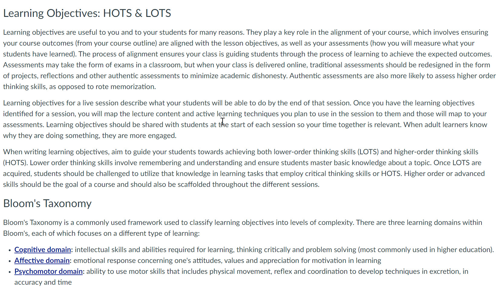

The Multimedia Principle says to use a combination of words and graphics to connect concepts and add visual interest.
The image below is a screenshot of a page that is purely text without a visual representation of the information. Hover over the image to see the difference when a graphic is added.
